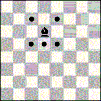

Check that is produced by a piece positioned
in an orthogonally or diagonally contiguous hex from the King's
position. Technically it is equivalent to
check on the knight's leap, except
that the King will have the option to capture the piece, if it is not protected.
It is significant, because the King has no opportunity to cover;
the only options left are to capture the threatening piece, or to move the King.
In the transcription of games it is important to indicate this, in order
to highlight the situation and make it easier for people to read.
Notation
It is a case of check: At the end
of the move the symbol + is added.
Although optional, it is highly recommended to add the circumflex symbol
^, i.e. +^, to inform that
it is a adjoining check, a situation in which you must capture the
threatening piece, or move the King.
See also
Traduccions
Adjust — I adjust!
Not yet translated
The French term j'adoube! is internationally known.
See also
Translations
Advanced pawn
Not yet translated
See also
Translations
Algebraic notation
Algebraic notation is a chess notation system used to transcribe moves so that they can be
accurately reproduced later. The notation for C'escacs is an extension of
the algebraic notation (AN), which we call
CTL-AN,
because of the use of CTL coordinates.
The alternative notation CTL-FAN
(Columns and Transversal Lines - FAN, Figurine Algebraic Notation), uses the
Unicode characters specific to chess pieces, instead of identifying letters.
The formalism is further concretised in the computer game exchange format,
CTL-PGN (Columns and
Transversal Lines - PGN, Portatil Game Notation), where game identification tags are
required to be added, and many others are optionally supported to add additional information.
But the labels also allow the incorporation of functional information, such as the previous
situation of a game being resumed, using the TLPD notation - Transversal Lines Position
Description, a notation very similar to the FEN notation (Forsyth-Edwards Notation).
It is not a particularly appropriate name for algebraic notation, as it has no connection
with algebra, but traditionally the name has been retained.
See also
Translations
Almogavar
Catalan Almogavars.
via Wikimedia Commons
Peter III of Aragon at the Coll de les Panizas. It depicts the moment
when King Peter orders the Almogavars to stop their attacks to allow
the French king, Philip III, who is dying, to pass through.
Bartomeu Ribó i Terriz, via Wikimedia Commons
Piece that was the first substitute for the Prince, in the
first versions of C'escacs. It was inspired by the Omega ChessChampion, but adapted to the hexagonal board, and with the moves simplified to eliminate the
additional complexity introduced by the jumps. It wasn't the piece the game needed, either.
See also
Translations
Archbishop
Capablanca's chess piece. For the C'escacs equivalent, see
Pegasus.
In all hexagonal chess variants which use
hextilled chessboards, the board consists of
hexes of three different colours, and because of this, and
being the Bishop a colourbound piece, three bishops are generally used
for each player, providing one available for each colour. This is the case of C'escacs,
Gliński's hexagonal chess and McCooey's hexagonal chess.
Two Bishopscannot checkmate a lone
King, and a minimum of one
Pegasus and one Bishop, or one
Pegasus and one Knight is required.
Notation
The recommended letter for the Bishop in C'escacs
notation is J, representing a courtier, as in
card games: Jack (Knave). The notation J is not directly linked
to any language for the Bishop.
The aliases A, B, F and L are
also accepted. Many aliases are accepted due to the great diversity of names in the different
languages, and the most meaningful and least confusing ones have been preserved.
See also
Translations
Black
The name of the player who moves second, although his pieces, always called the black
pieces, are sometimes of a different colour (usually dark).
Similarly, the dark hexagonal tiles on the hextilled
chequerboard are called the black hexagonal tiles,
black hexes, even though they are not literally black, but dark.
We speak of black as opposed to white, both for
the pieces and for the hexes. The third colour of the
hexes on a hextilled chequerboard is called
colour, as opposed to black and white.
The Bishop moving through the black hexes is often
referred to as the black Bishop.
It is the only chess move that simultaneously moves two pieces of the same player, in the case of
C'escacs, up to three pieces. The move consists of the
King's leap complemented by the displacement of one
(single castling) or both rooks
(double castling). This move can only be made if the following conditions
are met:
It is the first movement of all the pieces (two or three) involved.
At the moment of the move there is no attack on the King (no check).
The target hexes are free; a capture cannot be made on a castling.
The Rook can make the orthogonal movement, without being hindered by any part.
Of course, the King cannot be left in a threatened hex.
Strategy
It can be said that, in C'escacs, castling allows the evasive move of
the King's leap, and an additional move of the Rooks,
which can collaborate in the defence or in an attack. Its strategic value is much less than it
represents in orthodox chess, and is always very much conditioned by the position of the
moment. It is not very convenient to have a planned
development to make this move, although reserving the
option may be convenient.
See also
Translations
Capture
Not yet translated
See also
Translations
Chancellor
Capablanca's chess piece. For the C'escacs equivalent, see
Dragon.
A chess set from the end of the 11th century, incorrectly called Charlemagne's chess, as it is
from a later period and he never knew it. Made in Italy, most probably in Salerno, the helmets
and shields allow us to identify Norman and Byzantine troops, who fought against each other in
the Norman conquest of southern Italy in those years. In addition to its historical interest,
the game is notable for three features:
The Bishops are represented as elephants, which is the original representation
of this piece, from the Xaturanga.
The Rooks are represented as chariots, chariots drawn by four knights, the
chariot also being the original representation of this piece, from the
Xaturanga.
The representation of the Queen already appears, even though the piece still
moved as a Ferz.
See also
Translations
Chesspiece identifying letters
Each of the chess pieces is identified by a letter. This letter, in
C'escacs, and in the algebraic notation
CTL-AN, is invariant, regardless
of the language. Some alternative letters are also defined, which require consistent use, using
the same letter all throughout the game, and only the alternative letters already predefined;
in CTL-PGN the declaration of the alternative letter has
to be incorporated at the beginning to be used, overriding the standard identification letter.
There are also Unicode chess characters, which can be used in a similar way to the alternative
letters. In this case, it must be taken into consideration that there is a different character
to represent each piece in its version for the white set, and a different one for the same piece
in the black set. Algebraic notation using CTL-FAN Unicode chess characters uses a different
character for each piece and colour.
Column F is the column with the most
hexes (fifteen). It starts at line zero, and ends at line twenty-eight. The numbering of the
lines advances in pairs, because the odd lines have no hexes in the
central column. It divides the hextilled chequerboard between
the kingside and the
:
Queenside columns
P, T, A, B, C, D,
E. Left for White, right for Black.
Kingside columns
G, H, I, K, L, X,
Z. Right for White, left for Black.
See also
Translations
Check
A move in which the opposing King is threatened.
During a game the opponent must be warned aloud with the word "check".
In any written transcript of the move this must be indicated.
The threatened King is said to be in check.
Notation
At the end of the movement the symbol + is added.
Although it is optional, it is advisable to also add the symbol
differentiating the check category:
In addition, there is the case of checkmate,
which uses the symbol # instead of the symbol
+.
See also
Translations
Check from afar
Check that is produced by a piece
positioned in an orthogonally or diagonally but not contiguous hex
from the King's position. It is significant, because this is the
case that leaves the king with the most options: cover, capture the
threatening piece, or move the King.
In the transcription of games it is important to indicate this,
in order to highlight the situation and make it easier for people
to read.
Notation
It is a case of check: At the end
of the move the symbol + is added.
Although optional, it is highly recommended to add the infinity symbol
∞, i.e. +∞, to inform
that it is a check from afar.
Veieu també
Traduccions
Check on the knight's leap
Check that is produced by a piece
positioned in a knight's jump from the King's position.
Technically equivalent to adjoining check, except that the
King does not have the option of capturing the piece himself,
even if it is not protected. It is significant, because the King
has no opportunity to cover; the only options left are to capture the
threatening piece, or to move the King.
In the transcription of games it is important to indicate this,
in order to highlight the situation and make it easier for people
to read.
Notation
It is a case of check: At the end
of the move the symbol + is added.
Although optional, it is highly recommended to add the circumflex
symbol ^, i.e. +^,
to inform that it is a check on the knight's leap, a
situation in which you must capture the threatening piece, or move
the King.
The third colour of the hexes on the
C'escacshextilled chequerboard
is simply called Colour, even if the
hexes are not coloured, but they must be of a medium
shade, between the shades of white and black.
We speak of Colouredhexes, as opposed to Black and White.
The central hex of the hextilled chequerboard is
coloured It is the point of maximum orthogonal control of the board, but
not of maximum diagonal control, since the surrounding hexes slightly increase the
diagonal control.
The Bishop that moves through the coloured hexes is called the coloured Bishop.
The hexes in a column are numbered in pairs, because the
cross-lines do not cross all the columns.
Even columns
Columns of even lines; they are crossed by even cross-lines, and the hexes have even
numbering.
Odd columns
Columns of odd-numbered lines; they are crossed by odd-numbered cross-lines, and the
hexes are odd-numbered.
Notation
Each column is named after a letter. The eleven middle columns keep the
name of Gliński's hexagonal chess, from A to L, except for J,
which Gliński did not include to avoid confusion. In C'escacs four
new columns are incorporated: P and T are before A, and columns
X and Z after L.
The names of the columns must always be written in capital letters. In order, their names are:
P, T, A, B, C, D, E, F,
G, H, I, K, L, X, Z.
The central column F is a column of even lines; the even columns are:
T, B, D, F, H, K, X.
The odd columns are:
P, A, C, E, G, I, L, Z.
Any hexes are identified by the
Column and cross-line to
which they belong.
See also
Translations
Court
A diamond-shaped space bounded by the player's pawns. The two flank pawns, the only ones that are
not defended, remain outside, while all the other pieces are positioned inside the
court at the start of the game.
For White, the rhombus: B4 – F8 – K4 – F0
For Black, the rhombus: B24 – F20 – K24 – F28
See also
Translations
Court piece
The most powerful C'escacspieces, as
opposed to the troop. Specifically:
Observe that the hexes of the court pieces initial
position are named the court.
See also
Translations
Cross-line
Name given to the transversal lines, which are
lines that cross the
hextilled chequerboard from left to right.
The cross-lines act by measuring the advance from the white half to the
black half, a division which effectively takes place on line fourteen, a line which is
called the midline: the seven hexes which form the midline are equidistant from both sides.
Notation
The cross-lines or transversal lines are numbered from zero to twenty-eight. The
first (zero) and the last line (twenty-eight) are lines with only one
hex.
Any hexes are identified by the column and the cross-line to which they belong.
See also
Translations
CTL coordinates
CTL is the acronym for
Columns and Transversal Lines,
a system of coordinates for a hextille. It is the system used in
C'escacs to identify a hex: a letter denotes the
Column, also known as lengthwise file, and a
number indicates the cross-line.
In C'escacs each hex is identified
by the letter of the column followed by the number
of the cross-line to which it belongs.
It is also sometimes referred to as double or doubled system,
because the numbering of the hexes in the columns advances in pairs, since a
column only crosses odd or even lines.
See also
Translations
CTL-AN
CTL - Algebraic Notation is an algebraic chess notation using
CTL coordinates; it is the algebraic notation of
C'escacs.
See also
Translations
CTL-FAN
Columns and Transversal Lines - Figurine Algebraic Notation; algebraic notation identical to CTL-AN, except that it uses the Unicode characters specific
to the chess pieces, instead of the identifying
letters.
Unlike CTL-AN notation, a different character is used for
the pieces depending on the colour, with nine characters identifying the nine white pieces and
nine for the black pieces.
The identifying letters are simpler to use for annotations that make people; in addition,
Unicode symbols may require a larger font to clearly distinguish between the
Wyvern (Dragon), the Pegasus and the Knight.
Pawn
Elephant
Bishop
Knight
Pegasus
Rook
Wyvern
Queen
King
Halberdier
Castle
Dragon
P
E
J
N
G
R
V
D
K
♙ ♟
☖ ☗
♗ ♝
♘ ♞
🩐 🩓
♖ ♜
🩏 🩒
♕ ♛
♔ ♚
U+2659, U+265F
U+2616, U+2617
U+2657, U+265D
U+2658, U+265E
U+1FA50, U+1FA53
U+2656, U+265C
U+1FA4F, U+1FA52
U+2655, U+265B
U+2654, U+265A
See also
Translations
CTL-PGN
Game recording with CTL-PGN notation is similar to PGN (Portable Game Notation) format. It
adds information about the game (meta-information) to the algebraic
notation using labels, as well as comments and
variations to the moves.
It allows the exchange of games with computers. It is a format for plain text files (nowadays
Unicode, encoded in UTF), which prefixes algebraic notation
(CTL-AN) with tags to add meta-information. A
tag is
written on one line, enclosed in square brackets [ … ], and it contains a word
as the tag identifier, followed by text in inverted commas, which
is the value of the tag.
After the tags appears the transcription of the moves in algebraic
notation,
where comments, written between curly brackets { … }, and
variations are allowed. Variations are alternative moves
written in parenthesis ( … ), and can be nested, as variations of variations.
Castling that uses the King and the two Rooks
simultaneously.
Movement consisting of a King's Leap and, in the same
movement, without giving up the turn, the displacement of the two Rooks to hexes
that are orthogonally contiguous to each other, and both orthogonally contiguous to the
hex where the is positioned. The three pieces move in a single move, and the
King does not prevent the rooks from moving, but the five conditions required for
castling must be met:
It is the first movement of each of the three participating pieces.
At the moment of the move there is no attack on the King (no check).
The target hexes are free; a capture cannot be made on a castling.
Both Rooks can make the orthogonal movement, without being hindered by any part.
Of course, the King cannot be left in a threatened hex.
Notation
The notation is constructed with a prefix indicating the pieces involved in the movement: KRR, the
King and two Rooks. Separated by a hyphen, three letters are indicated: the first is
the name of the King's target column, the second the King's Rook target column, and
the third the Queen's Rook target column.
There are fivedouble castling cases, each one prefixed with
KRR. They are distributed over three different locations in
King's leap:
KRR-EEF
KRR-FEE, KRR-FGG
KRR-HGG, KRR-HIH
See also
Translations
Double check
Check that is produced by the simultaneous threat of two
pieces. This is a concrete case of a discovereddouble attack, where the attacks of both pieces are
against the King.
In this situation, the King will have to move, because, being two attacking pieces,
it will not be possible either to cover from the attack or to capture the attacking piece.
It is possible that one of the attacking pieces can take advantage of the hex abandoned by
the King to make a second check,
protecting itself with the other piece taking part in the double check.
During a game, the opponent can be warned that the check is a double check
when the level is beginner.
In the transcription of games it is important to indicate this, in order to highlight the
situation and make it easier for people to read.
Notation
It is a case of check: At the end of the move the symbol
+ is added.
Although optional, it is highly recommended to add another +
symbol, i.e. ++, to inform that it is a double check,
a situation in which the King will have to move.
See also
Translations
Double step
Option for pawns to advance two hexes simultaneously, when they do so by advancing straight forward on a
column.
See also
Translations
Doubling up rooks
Not yet translated
See also
Translations
Dragon
Wyvern from the flag that Owain Glyndŵr displayed after claiming
the kingdom of Wales in The Last War of Independence. Image:
Hogyncymru, CC BY-SA 4.0, via Wikimedia Commons
Tarragona wyvern at the Tortosa Festivitas Bestiarum festival.
As a major piece, a King and a Wyvern
(Dragon) can checkmate a lone King.
Their power is very similar to the power of the Queen:
The Wyvern (Dragon) is preferable against the
Rook, but the Queen
is much better against the Pegasus.
Notation
The distinctive letter of the Dragon (Wyvern) is V
(in Catalan Víbria, in French Vouivre). The W (Wyvern,
in English or German) is accepted as an alternative letter.
The name
Chess is a game with medieval roots, possibly even with earlier origins. What could represent a
force equivalent to the Queen, which is the most powerful piece on the board? The answer
for me was obvious: a Dragon; actually a Wyvern, which in Catalonia is represented
as a female Dragon.
See also
Translations
Draw
A draw is the result of a draw between the players in a game. It occurs:
Due to insufficient material, limited to
cases where mate is not possible. Cases that only allow
mate in certain positions, may end up as draw by agreement, or due to
exhaustion of moves.
By agreement between the players, in which they are called
draw by agreement.
By exhaustion of moves, applying the
fifty-move rule or the seventy-five-move rule.
By repetition of the position, applying the
rule of three repetitions or the rule of five repetitions. The repetitions,
when they are not consecutive, may not be obvious, and there is no counting mechanism, but
automated techniques (computers) allow interactive calculation, applying a hash function on
the position, and comparing it very quickly with all the previous positions of the game to
obtain a count of repetitions.
Valuation
Both players get one point: 1-1
See also
Translations
Draw by agreement
A player may offer a draw on his turn, after making his move, and the opponent shall reply before
making his move. In the case of clock play, the draw offer will be made on the player's own time,
before pressing the clock to make the timing change.
See also
Translations
Elephant
Elephant moves.

In Southeast Asian chess
the Bishop is given the Elephant's move.
The Elephant is a piece that has only five moves, two orthogonally forward, and four diagonal
moves that maintain the colour of the hexes where it is positioned, but the two orthogonal
moves allow it to change colour, avoiding to be
colour bound. Two of the diagonal moves allow him to
move backwards, thus also avoiding this Pawn limitation. The Pawns, together with this
piece, constitute the troop.
You can remember the five movements, thinking that the two forward movements draw the
elephant's trunk, and the four diagonal movements, the legs.
It is a slow piece in the big C'escacshextilled chequerboard, but
its speed is equivalent to the speed of the Pawns. The piece is important in helping to
create the Pawn structure, and, for this
function, the speed is adequate.
The value is little more than a Pawn, particularly if you consider that it has none of the
special features of Pawns: no promotion, no en passant capture and no
capture of the scornful pawn. It is typically rated as two pawns.
Notation
The distinguishing letter of the Elephant is the letter E.
The alternative name is Halberdier, and the alternative letter is H.
Considering that there is no specific Unicode character available for the
CTL-FAN notation (two, one black and one white), the
characters ☖ (U+2616) and ☗ (U+2617), originally reserved for Shogi, are adopted.
See also
Translations
En passant capture
En passant.
Not yet translated
See also
Translations
En prise
Not yet translated
See also
Translations
Endgame
Not yet translated
See also
Translations
Exchange
Not yet translated
See also
Translations
Exchange, won/lost the
Not yet translated
See also
Translations
Exhaustion of movements
The move counter is reset to zero each time a pawn is moved or a piece captured. This rule
prevents a game from becoming infinite without a winner being decided.
Seventy-five move rule: A game is a draw after seventy-five full-moves without captures or pawn
moves, i.e. one hundred and fifty half-moves.
Fifty-move rule: A player can demand a draw if fifty full-moves have elapsed during his turn without
captures or pawn moves, i.e. one hundred half-moves.
See also
Translations
Fairy Chess
Not yet translated
See also
Translations
File
On a hextilled chequerboard, each side of a
hex forms a file with the adjacent
hex on this side, and successively with the next one,
adjacent in the same direction. This file is extended in the same way with the previous adjacent
hexes on the opposite side, together with the preceding
ones in the opposite direction; therefore, each hexes
belongs to three different files.
Pawns positioned in a consecutive oblique file, so
that they are positioned in consecutive columns and
consecutive lines.
They constitute an impediment to
orthogonal moves and half of the
diagonal moves, without the
structure being tied to any colour. This pawn
structure requires a defence for each of the constituent pawns, because the pawns capture diagonally, and do not defend
each other. These barriers formed by the files of pawns delimit the space of the players, being very useful, which is why they
are generally built with the help of elephants for their
defence.
See also
Translations
Fool's mate
[Variant "C'escacs"]
[Id "Cescacs-X01-en-V"]
[Lang "ca"]
{ Fool's mate }
1. H6-H12 ?!, I23-I19 ?!
{ @W: curious opening pawn }
2. JF6-C15 ?!, GH26-Z11 ?!
{ @W: bishop to cover 15 but neglect defence K }
3. L5-L7, NG25-L17 ?!
4. EH4-H8 ??, GZ11-L5
{ @W: Removing E from H4 leaves K unattended }
(4. G7-G13)
(4. GD2-F6)
5. I5-I9 ??, NL17-G9
{ @W: Irrelevant movement ?? }
{ @B: Positions N }
(5. K4-K10, GL5-H6+
.{ @W: Moving P threats GL5 with RI3 }
.{ @B: Check without reinforcement will not succeed }
.6. KG1-H4, GH6-I11
.(6. …, GH6xRI3)
.(6. …, GH6-K12))
6. K4-K10 ??, GL5-H6#
{ @W: Irrelevant movement ?? }
(6. GH2-K6)
(6. GD2-F6)
0-3
{ @N Must neglect JF6 and EH4 }
{ @W Attack K on knight jumping }
Fool's mate is the quickest possible checkmate, which can only happen if the
white player plays extraordinarily badly. In C'escacs it happens
in six moves, three very badly played by White, and some slightly contrived moves by
Black to achieve mate with a knight and a pegasus. The attached
record shows alternatives (in parenthesis) to White's three wrong moves; only one of these
rectifications is sufficient to avoid the mate.
See also
Translations
Forced move
A move for which the player has no viable alternative.
Also the promotion of a pawn awaiting
promotion falls into the category of a forced move, since the rules do not allow
any other move.
The term is also used, by extension:
A move that is the only one that does not involve a serious disadvantage for the player
making it.
A sequence of moves in which a player's moves are forced moves, as in
forced mate, or winning a piece in a forced manner.
See also
Translations
Fork
Not yet translated
See also
Translations
Full move
A complete turn, consisting of White's move and Black's move. A player's turn is a half
move, in computer chess also called a ply.
Alternative name for the Elephant piece.
It allows to refer to the piece in languages that use the word elephant to refer
to
the bishop.
See also
Translations
Half-move
A full move is a turn by both players, White and Black. A
turn by either White or Black is a half-move, or (in computer context) one
ply.
See also
Translations
Hex (hextille)
Each of the hextilles of a hextiled
chequerboard, hexagonals in shape; usually named hex
as an abbreviation of hextile, but it will be of one of the three different colours of
the coloured tessellation that forms the board:
Any hexes are identified by the column and the
cross-line to which they belong.
See also
Translations
Hextilled chequerboard
Board made up of hexagonal cells that form a hexagonal tessellation in three
colours. Each of the hexagonal cells is called hextiles, also named hexes as an
abbreviation of hextile. When nothing is indicated, it will be a board in the shape of a
regular hexagon, as in the case of C'escacs.
In the event that an illegal move is discovered during a game, it must be rectified
immediately.
If it is not rectified, and the illegal move is discovered later, the game is void,
regardless of the direct consequences of the illegal move.
It is necessary that the illegal move is recognised by both players; this
may be due to a misinterpretation of the rules by the players, or if the game has
been recorded.
See also
Translations
Illegal position
A position that is the result of a move not permitted by the rules or an incorrect starting
position.
If an incorrect starting position is discovered, the game must be restarted.
In the event that an illegal move is discovered during a game, it must be rectified.
If an illegal move is discovered after the end of a game, the game is void.
See also
Translations
Insufficient material
In an endgame, when
all the pawns have been captured, and one side has only the
King left, and the other side has no
major pieces:
If the player with the most material has only the
King, alone, or with a
minor piece, or an
Elephant, no
mate is possible, and the player is said to have
insufficient material, and the game is a
draw.
If the player with the most material has only one
medium piece (Pegasus) or
two minor pieces, or one
minor pieces and an
Elephant, or when the only pieces left are
Elephants, there are only rare and few positions in
which mate is possible, but with these pieces it is not possible to move the King
into a mate position.
If the position does not allow a glimpse of mate
in the next five moves, it would also be a case of insufficient material,
but instead a draw will be agreed,
or, failing that, a draw will be
produced when the moves are
exhausted applying the fifty-move rule (one hundred half-moves), or the
seventy-five-move rule (one hundred and fifty half-moves).
To mate a lone King requires
at least one of two options:
The King is the most important piece in the game. It can move in any direction but only
one square at a time. In any case, it cannot position itself on a square where it could be
captured by an opponent's piece.
King's special gaits
The King has three special moves which, if it is not in check, it can make on its first
move:
Simple castling allows a
Rook to move simultaneously with the
King's leap, provided it is its first move, with both
pieces ending in orthogonally contiguous hexes.
Double castling allows both
Rooks to move simultaneously with the
King's leap, provided it is their first move, with
the three pieces ending in orthogonally contiguous hexes.
With the King's leap you can capture an opponent's piece,
but not with castling.
Valuation
If the King is threatened by an opponent's piece (check), the attacked player must respond to the threat in one of the
following ways:
Killing the opponent's piece.
Putting a piece between the opponent's piece and the King to protect him, but this is
not possible if the attacker's threat is with a
knight's jump.
Moving the King to a hex where it is not threatened.
If none of these options is possible, it is checkmate,
and the player who has the King in a dangerous position loses the game.
Notation
The King's distinctive letter is K.
See also
Translations
King's leap
King's Leaps.
A knight jump which the King can make on his
first move, if he is not in check. With this move the
King can capture an opponent's piece.
A move consisting of the movement of one hex on a
diagonal, followed by another orthogonal
movement of a hex to one of the two hexes tangent to the line of the diagonal
movement; the movement cannot be prevented by interposing a piece, and the move is said to be a
jump.
Similarly, it can also be defined as an
orthogonal movement followed by a
diagonal one; anyway, it can be seen
that the color of the destination hex is different from the source hex.
On a hextilled chequerboard, each of the
vertices of a hex defines a line with a
hex of the same colour, and successively with the next one in the same direction,
together with the preceding ones in the opposite direction.
Unlike the files, the
hexes forming a line are not in
contact, but are connected by the edge separating the two hexes of different colour
adjacent to the edges forming the vertex.
The lines define the diagonal moves, the
Bishop's moves. An important property is that all
hexes belonging to a line are of the same
colour; therefore, there are white lines,
black lines and
coloured lines.
The cross-lines are numbered
from zero to twenty-eight. The first (zero) and the last line (twenty-eight) are
lines with only one hex.
They act by measuring the advance from White's half to Black's half, a
division which effectively takes place on line fourteen, a line which is called the
midline: the seven hexes which form the midline are equidistant from both
sides.
A pawn structure, positioned in an
oblique line so that, from the first pawn, on which
the defence of the structure depends, they defend one by one.
It is not a very effective structure, as it does not present many impediments to the opponent,
except for one oblique file out of two, and the lines of the colour of the structure, leaving
the lines of the other two colours unaffected. Of course, it also occupies the columns
on which the pawns are located.
See also
Translations
Major piece
The most powerful court pieces in
C'escacs; with the King and one of these pieces you can checkmate
a lone King.
The oblique files form a 60° inclination with the columns; symmetrically, another oblique file forms a -60°
inclination with the same column. Each hexes belongs to one column and
two oblique files.
The reason for the name orthogonal is due to the orthogonal direction of the movement with
respect to the edges of the hexes. But it also refers to
the cubic coordinates, considering the hextilled
chequerboard as a projection of a cube, thus making the three
files of hexes, one
for each pair of opposite edges, as the
three different orthogonal directions of a cube.
See the drawings of the
cubic
coordinates, on the Amit Patel Red Blob Games website.
Movement that starts from a hex leaving from one of its
sides, towards the hex next to it; the movement can
continue successively in the same direction.
Pawn moves and captures, not including special moves.
The Pawn is the minimum piece, with orthogonal displacement in the three forward
directions, and diagonal capture, also forward, in two directions. It is a piece that has
different movements for displacement and for captures.
The Pawn always advances forward; when a Pawn reaches the last hex on a
column, the Pawn is
promoted, provided there is a
regainable piece available.
Pawnmoves are always forwards, in the three orthogonal directions
allowed by the hexes in which it is positioned. If the move is straight forward along the
same column, a double step can be made, advancing
two hexes.
In the initial positions of the pawns on the
court this move can be a
triple step, except on the
central column (F). Nor
is it possible on the flank A and L columns, outside the
court; in fact these pawns already
have advanced positions in one hex with respect to the rest.
The Pawncaptures with
diagonal move in any two hexes diagonally
in
front of the hex on which it is positioned, hexes of the same colour.
When a pawn makes a double move,
or a triple move, if it crosses a hex
where it could have been captured by an opponent's pawn, it can be captured on the
next move as if it had been in this hex; this capture is called
en passant capture.
When a pawn is facing an opponent's pawn on the same column and
consecutive hexes, so that it is prevented from advancing up the column, if it
makes a scornful, orthogonal oblique move, changing
column, the pawnon the next move can be captured
orthogonally by the opponent's pawn it was facing. This exceptional orthogonal
capture is called a
capture of the scornful pawn.
Valuation
The Pawn represents the unit on the valuation scale. Together with the
Elephant they make up the bulk of the pieces called the
troop.
Notation
The distinguishing letter of the Pawn is P, but it is the only piece for
which it is usually obviated and implied.
The Pawn will have to wait, without withdrawing from the
board, until a valid piece is captured for promotion; when the opponent captures a valid
piece, the next move is a forced move
which is limited only to the promotion of the pawn, without allowing the player to move any
pieces. The waiting pawn, when promoted, consumes the player's turn.
The pawn is on standby, of no use in the game, due to its advanced position on the
last hex of the column.
If there is a pawn awaiting promotion, when a
regainable piece is captured,
promotion is mandatory on the next move, with no other action allowed, apart from making the
promotion effective; one could say that a turn is lost.
A pawn awaiting promotion can be captured in the same way as any other piece. In fact, if
the pawn is not on the central column, it will have one possible move, changing the
column on which it is positioned, but it will remain as a pawn in waiting, unless there
is a captured bishop of the colour of the new hex, in which case promotion will
take place. A pawn in waiting has no capture move.
See also
Translations
Pawn structure
The configuration and placement of the pawns on the chequerboard. Since pawns are the
least mobile of the chess pieces, the pawn structure is relatively static.
In the context of C'escacs
It is true that in C'escacs the pawns incorporate more mobility,
but even so, the troop (pawns and elephants)
has limited mobility. Elephants were introduced precisely as a tool for the construction
of more solid pawn structures: the pawn files.
The pawn structure is mainly built with two structures:
File of pawns, positioned consecutively in an
oblique file. Correctly defended they are the
most useful structures, but some defence is required for each of the pawns, because they are
not defended against each other; this task usually falls to the elephants.
Lined up pawns, where the pawns defend each
other, forming a line from the first, undefended pawn. This type of structure is less
strategically useful, but may seem more familiar, by analogy with orthodox chess.
Comparison with orthodox chess
In orthodox chess, a sequence of pawns placed on a diagonal interrupts the continuity of
the horizontal and vertical files and the diagonals of the colour on which the structure is
located, i.e. half of the diagonals: a highly effective structure, as also each pawn,
except the first, is protected by the preceding one.
Lined up pawns, the C'escacs
similar formation, lacks much of these properties: it leaves two colours still to cover,
covering only one of the three colours, but also leaves oblique files open; the result is
very ineffective. This problem appears in hexagonal chess, when pawns capture across
diagonal lines.
This is the main reason in Gliński hexagonal chess for defining captures orthogonally for
pawns: pawn structures in Gliński hexagonal chess are built orthogonally,
in oblique files, making them effective.
In C'escacs, the files of
pawns, orthogonal files, can be built using elephants to defend the pawns;
therefore, one should rather speak of troop structure, since elephants are a
fundamental part. An elephant can easily defend up to three wedge-shaped pawns,
but it would be preferable not to overload the elephants, which are the weak links in the
chain.
In the files of pawns the continuity of all the files,
and half of the diagonal lines, is interrupted, so it can be said that it is a structure
equivalent to the diagonal pawn sequences of orthodox
chess, but, in C'escacs, with a higher cost, and also a slightly
more precarious stability, considering the greater mobility of the pieces.
With the King, a Pegasus and a
minor piece it is possible to checkmate a
lone King. This justifies its classification as a
medium piece.
The Queen is preferable against the Pegasus, but the Wyvern
(Dragon) is preferable against the Rook.
Notation
The distinguishing letter of the Pegasus is G.
The name
The name of the Pegasus was chosen because of its behaviour on the hextilled
chequerboard. In the same way that the modern Bishop initially took the name of
messenger or runner, because of its ability to move around the board, the
Pegasus has the ability to place a Knight quickly in a distant position; really a
more powerful piece than a Knight, but with the property that gives it the speed of a
Bishop, of a messenger or runner. The name, then, was obvious:
a flying knight.
It must also be understood that, on the hexagonal board, the Knight is a slightly more
powerful piece than the Bishop; the combination of the two is even a more powerful piece,
but in addition it incorporates the speed of the Bishop, which is the Knight's
great handicap on a board the size of C'escacs.
See also
Translations
Perpetual check
Not yet translated
See also
Translations
Piece
Each one of the chessmen that take part in the game, any of the movable figures.
White and
Black.
Extension of the court to include all the
promotion files. The
centrehex (F14) is shared by
the zones of both sides, the white zone and the black zone.
White zone, the rhombus: P7-F14-Z7-F0
Black zone, the rhombus: P21-F14-Z21-F28
It can also be seen as a restriction of the
middle of the board, making it a little more
specific to the most important hexes.
See also
Translations
Ply
Not yet translated
See also
Translations
Positional play
Not yet translated
See also
Translations
Prince
The Prince was a piece of C'escacs in its early days. There were
two per player, but Elephants did not yet exist. Its move
was the same as the King's, but the difference was that it was not
royal. The Prince was changed to the
Almogavar, and finally to the Elephant, adjusting the design of the game.
It is said that a piece is regained,
because the piece regained must be a piece previously captured by the opponent. The piece
regained must be a court piece: Queen,
Wyvern (Dragon), Rook, Pegasus, Knight or
Bishop, but in the case of the Bishop, the colour of the Bishop regained
must match in colour with a captured Bishop; therefore:
A player cannot have two Bishops of the same colour in play. Elephants belong
to the troop, and are not regainable.
Promotion is compulsory, but if there is no regainable piece, because there have been no captures or the
captures have been limited to pawns, elephants, or bishops of a colour
different from the colour of the hex in which the pawn promotes, the pawn must wait,
without removing it from the board, until a piece valid for promotion, a
regainable piece, is captured.
This pawn awaiting promotion can be captured
in the same way as any other piece. In fact, if the pawn is not on the final vertex, it will
have one possible move, and could reach a hex of a colour for which there is a captured
Bishop.
As soon as a capture leaves a
regainable piece available, on the
next move promotion occurs automatically, consuming the player's move. No
alternatives are left; only if there is more than one pawn awaiting promotion can
the player decide which pawn to promote.
If a pawn awaiting promotion is
not on the F-column, it can advance to a hex of another colour,
reaching the last hex on another column. There may be a
regainable bishop available for this colour, and the pawn is exchanged for
the bishop.
See also
Translations
Queen
It can move like the Rook and the Bishop. Together with the Rooks and the
WyvernDragon, it is one of C'escacsmajor pieces.
Valuation
As a major piece, checkmate can be made with a
King and a Queen to a lone King.
The Wyvern
(Dragon) and the Queen are about
equally powerful. The Queen is preferable against the
Pegasus, but the Wyvern (Dragon)
is much better against the Rook.
King and Queen do not beat a
King and Rook: 4.3% of
the positions are drawn by continuous check, and 37.2% are drawn (no mate).
The distinctive letter of the Queen is D. Q is accepted
as an alternative letter.
See also
Translations
Queen's Rook
Not yet translated
See also
Translations
Regainable piece
A piece captured by the opponent that can be recovered by
promoting a pawn. All the
court pieces except the King are
regainable, but in the case of the Bishop the rule applies that does not allow a
player to have more than one bishop of each colour in play:
Bishop, only if it is the colour of the hexes in which
the promotion occurs.
Unregainable pieces:
The King is not regainable. The King
is not captured; if the King has no way to evade a threat, it is
checkmate, and the player loses the game.
A Bishop is only regainable in the same colour as when
it was captured. It is not allowed to have more than one bishop of the same colour
in play; we can think of the three Bishops as three different figures.
Troops are not recoverable, nor are
pawns, but neither are elephants.
See also
Translations
Repetition; Threefold/Fivefold
This refers to the repetition of a position, with the same pieces in play on the board, and all
in the same positions. Repetition only occurs if the state is also the same, i.e. the
castling ability of the pieces, which is lost if any of them move, and the availability
of a en passant capture or a capture of a scornful pawn, moves which are only
available immediately after the other side's pawn move that makes them possible.
The rule of five repetitions states that a game is a
draw if the same position is repeated exactly five
times, not necessarily consecutively.
However, a player can still demand a draw if the same
position is repeated a third time in his turn; this is the so-called
three repetition rule.
See also
Translations
Ride
Knight rides; Also shown are the intermediate hextiles,
positions of the horse jump, which must be empty.
Movement without capture reserved only for the
Knight. It consists of:
The intervening hex, the end of the first jump and the
start of the next, must be free.
Also the final hex of the second jump must be free, as
this movement does not allow a capture to be made.
There are a maximum of twelve possible rides, exactly one for each
knight's jumping position.
Rationale
This move was introduced in C'escacs because of the large size of the
hextilled chequerboard, to avoid the inconvenience of the knight's slow movement,
and to allow it to participate more in the game.
The Rook is a major piece that can move any number of hexes
orthogonally but cannot jump over the other
pieces. This orthogonal movement characteristic
means that on a hextilled chequerboard in the shape of
a regular hexagon, such as C'escacs, the number of hexes it can move
(mobility) increases as it approaches the centre of
the hextilled hexagonal board, thus increasing its
power, becoming maximal in the central hex. This is
different in orthodox chess, where the piece has the same mobility all over the board.
Valuation
The King and a Rook can checkmate a lone King.
A King and a Rook beats a King and a Bishop, without exception.
A King and a Rook beats a King and a Knight, except for a small
number of cases (0.0019%) where a draw is achieved by continuous check.
King and Queendo not beat a King and Rook:
4.3% of the positions are draws per continuous check, and 37.2% are draws (no mate
achieved).
Notation
The distinctive letter of the Rook is R. The alternative letter
T is accepted.
Origins
Direct transliteration of the Persian word Rukh (chariot).
See also
Translations
Royal piece
Not yet translated
See also
Translations
Sacrifice
Not yet translated
See also
Translations
Scornful pawn
A pawn, which is facing an opponent's pawn on the same column and
consecutive hex, in a way that prevents it from advancing up the column, is said
to make a scornful move if it makes an orthogonal oblique move, changing column,
and avoiding the opposition of the opponent's pawn.
See also
Translations
Capture of the scornful pawn
Capture of the scornful pawn.
When a pawn facing on the same column and consecutive hexcacs with an opponent's pawn makes an
oblique move avoiding the opponent's pawn, it can be captured on the next move by the pawn it
was facing. The capture is made orthogonally, moving to the position where the opponent's pawn
is; it is the only orthogonal move capture that pawns make.
The capture can only be made on the move consecutive to the oblique scornful move of the pawn.
A move consisting of a King's Leap and, in the same move,
without giving up the turn, the displacement of a Rook to a hex that is orthogonally
contiguous to the hex where the King is positioned. Both pieces move in a single
move, and the King does not prevent the Rook from moving, but the five conditions
required for castling must be met:
It is the first movement of each of the two pieces involved.
At the moment of the move there is no attack on the King (no check).
The target hexes are free; a capture cannot be made on a castling.
Both Rooks can make the orthogonal movement, without being hindered by any part.
Of course, the King cannot be left in a threatened hex.
Notation
The notation is constructed with a prefix indicating the pieces involved in the move: KRK for
castling with the King's Rook, and KRD for castling with the Queen's
Rook. Separated by a hyphen, two letters are indicated, the first being the name of the
King's destination column, and the second the Rook's destination column.
There is only one case that requires an additional indication, since KRK-HI indicates that
the King's destination column is the H column, and the I column for the
Rook; but when the King moves to the H column there are two positions on
the I column for the King's Rook. KRK-HIO indicates that the Rook
has only moved one hex, while KRK-HIOO indicates that the Rook has moved
two hexes. Only castlings KRK-HIO and KRK-HIOO require this distinctive indication.
There are eleven castlings with the King's Rook,
which are prefixed with KRK. They are distributed over four
different locations in King's leap:
KRK-EE, KRK-EF
KRK-FE, KRK-FG
KRK-HIO, KRK-HIOO, KRK-HH, KRK-HG
KRK-IH, KRK-II, KRK-IK
There are eight castlings with the King's Rook,
which are prefixed with KRK. They are distributed over four
different locations in King's leap:
KRD-DD, KRD-DE
KRD-ED, KRD-EF
KRD-FE, KRD-FG
KRD-HH, KRD-HG
See also
Translations
Simplification
Not yet translated
See also
Translations
Skewer
Not yet translated
See also
Translations
Space
Not yet translated
See also
Translations
Stalemate
Leaving the opponent without the possibility of making any legal moves, which means that the game
ends immediately, with a narrow victory; the stalemated player,
who has been left with no moves, wins one point, and his opponent wins by the
minimum and earns two points.
Pawns have the option of advancing three
hexes straight forward on the
column when they are in one of the initial positions of
the pawns on the court, except in the case of the
central column (the F column); it makes no
difference whether a pawn has been moved or not, and the
ability is provided by the hex on which it is located.
The two flank columns (columns A and L) are outside the
court and do not have this capacity.
Positions in which the pawns can advance three
hexes:
Queenside, columns: E, D, C, B.
White: E7, D6, C5, B4.
Black: E21, D22, C23, B24.
Kingside, columns: G, H, I, K.
White: G7, H6, I5, K4.
Black: G21, H22, I23, K24.
Justification
The move allows the pawns to position themselves next to
the midline on their first move; the most
delayed pawns are those on the B and K columns, but after their first
move, they can remain at a distance of one move from this line, a situation similar to the
rest of the pawns.
Pawns on the A and L flank columns are
already advanced relative to each other's positions, and they are one hex closer to promotion.
Veieu també
Translations
TLPD
TLPD stands for
Transversal Lines Position Description
It allows a specific board position and its status to be recorded. It consists of six components,
all six written on a single line, separated by spaces:
Piece position: string written between slashes.
Each element is separated by an oblique line from the next.
It starts at line 28 of the hextilled hexagonal board, in a descending order.
Each line is numbered, separating the number from the content with a colon.
The values of each hexes are written down, in order: T,P,A...L,X,Z.
Empty hexes are indicated by a digit, which represents the number of
consecutive empty hexes.
The pieces with their identifying letter, in capital letters for
white pieces, and in small letters for black pieces.
Lines without parts are omitted; this can be done because the lines are numbered.
Turn: w if it is White's turn, b if it is Black's turn.
Castling and King's leap status: Up to three upper case characters
for White: RKR, RK, KR, R, -. Similarly, then up
to three lower case characters for Black. As a minimum we will get two characters,
one for White and one for Black.
Hex capture for en passant or scornful pawn:
Three different cases occur, and a dash (-) will be used when none of the three
applies
For the scornful pawn it is sufficient to indicate the coordinate of the
hex where the pawn that can be captured is currently positioned.
For en passant capture, after the pawn coordinate, the at symbol (@)
indicates the column in which it can be captured.
If the pawn's move was a triple move, there are two columns where it can be
captured, and both are indicated separated by a dash (-).
Halfmove clock: It starts with a value of zero, and is incremented for
every move that is neither a pawn move nor a capture; when a capture is made or a pawn is
moved, the counter is reset to zero.
Full-move number: Number of the current move. It starts with the value one
and is incremented after each of Black's moves.
Ver también
Traducciones
Trap
Not yet translated
See also
Translations
Troop
In chess we differentiate between minor and
major pieces, and in C'escacs,
by analogy, we also talk about the medium pieces. In
addition, there is another category: pawns.
Elephants do not fall into any of these categories,
because their characteristics as a slow and unaggressive piece, and the strategies for defending
and battling with the pawns, are very different from those
relating to the minor pieces.
Elephants being much closer to the characteristics of
Pawns, the Troop category is defined,
which includes Pawns and
Elephants. The Troop shares the
basic strategy of space delimitation.
Therefore, the pieces are classified into two main groups: Troops and
Court pieces. The Troop is made up of:
The name of the player who moves first, even if his pieces, which are always called
the white pieces, are of another colour (usually a light colour).
Similarly, the light hexes on the
hextilled chequerboard
are called white hexes even if they are not literally white, although
they are light-coloured.
We speak of black as opposed to white,
both for the pieces and for the hexes, and the third colour of the hextilled
chequerboard is called colour,
as opposed to black and white.
The Bishop that moves through the white hexes is
called the white bishop.
The Wyvern (Dragon) is a piece that can
move interchangeably as the Rook, or with a
knight jump. Together with the
Rooks and the Queen, it
is one of the major pieces in
C'escacs.
Valuation
As a major piece, a King and a Wyvern
(Dragon) can checkmate a lone King.
Its power is very similar to the power of the Queen:
The Wyvern (Dragon) is preferable against the
Rook, but the Queen
is much better against the Pegasus.
Notation
The distinctive letter of the Wyvern (Dragon) is V
(in Catalan Víbria, also in French Vouivre) W
is accepted as an alternative letter.
The name
In reality the Dragon of C'escacs is a
Wyvern, which in
Catalonia is known as a type of Dragon that is characterised, among other things, for
being female. Usually, the more familiar term Dragon is used, despite the Wyvern
being a well-known beast in Catalonia, as well as in other places (England, Wales...), but it is
a medieval fantasy mythology, and perhaps not everyone is interested. Note that the
Wyvern has only two legs, instead of the four that the Dragon has.


.jpg)